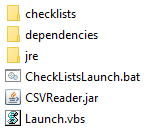
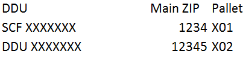
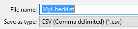
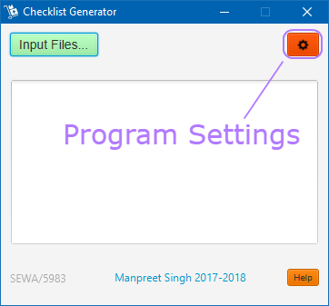
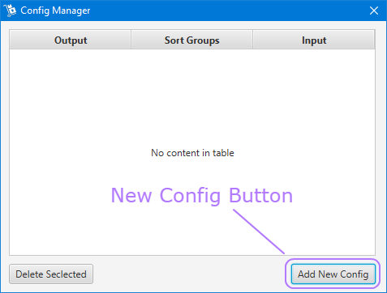
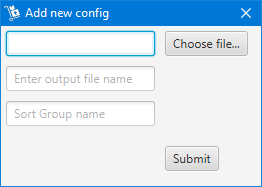
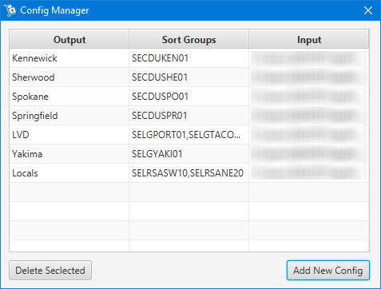
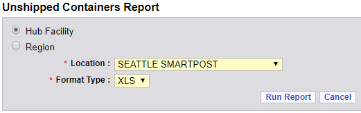

Table of Contents
Downloading the program
- Click the download button above, it will open a page with the latest release of the program
- From the release page, download the ChecklistProgram.zip file
- Extract the zip file into any folder, the contents of the folder should look like the image below

Creating the configuration spreadsheets.
Before we can begin using the Checklist program, we need to supply the program a spreadsheet of zip codes to sort by.
The list of all location and their zip codes can usually be obtained from your Hub Industrial Engineer.
At SEWA, we have 6 different spreadsheets that contain zip codes and pallet location for 6 different destinations. For example, let say we have trailers going to locations four different destinations A, B, C, and D. We would then compile lists of the pallets that need to get loaded into each trailer(s). List A would only contain all the pallets that need to get activated and loaded onto the trailer(s) going to destination A. This would get repeated for destinations B, C, and D respectively.
Each of these lists, should be in the format shown below.

- The first column should have the pallet's destination name, this is the same name that is printed on the sticker when the pallet is activated.
- The second column should have the zip code of the pallet. If the pallet has no zip code, then the 4 digit destination code is sufficient
- The third column should have the physical pallet location
In short, the zip codes on the spreadsheet should match the zip codes found on SSP and the UCR (Unshipped Container Report).
After creating the spreadsheet of all pallet locations. It's now time to save this spreadsheet. When saving this spreadsheet, you will need to adjust the save options. On the save file dialog window, change the "Save as type:" option to CSV (Comma delimited) (*.csv) as shown below.

Adjusting program settings
To adjust the program settings, click the red gear icon in the top right.

This will bring up the settings window, from which you will select the add new config button.

You should now see the Add New Config window.

From here you want to hit the Choose file buttons and choose the CSV file that was prepared in the Creating the configuration spreadsheets section of this page.
For the second box, input a name for the output excel file name. Do not include the extension (e.g. .xls or .xlsx)
For the third box, you now need to input the route(s) that the program needs to reference. The route should be the code you see on the I column on a Unshipped Container Report. You want to match the route code to your destination. You are able to input multiple route codes into this box as long they are separated by commas.
You will need to add additional Configs for all of your destinations if there are multiple.
The current config here at SEWA looks like this:

NOTE: Some information in the image above is blurred out for security reasons.
Any of the information above is editable by double clicking on the data cell. After changing data, press enter and close the window for the config to take affect. You do not need to restart the program after changing the config.
Running the Checklist Program
Running the program is pretty strait forward. The first thing you will want to do is download the Unshipped Container Report in the XLS format.
Head over to P2 and hover over the reports buttons and click Hub. Then you will get a list of available reports. You want to select the Unshipped Containers report from that list.
From there you will see a page that looks like this:

The location box should show you current facility. Change the Format Type to XLS if not already and hit the Run Report Button.
This will open/download a Excel spreadsheet of the Report. You want to keep track of where this file is saved or you can open and save the file to a different location at your convenience.
You will now want to open the Checklist Program and select the green Open Excel File button. The program will prompt you for a file. You want to select the Unshipped Container Report you saved previously.
If everything went well, The pallet checklists should open up automatically.